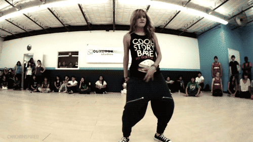

¿QUE ES EL HIP-HOP?
El hip hop1 o hiphop es una cultura originada en el sur del Bronx y Harlem, en la ciudad de Nueva York por Afroamericanos y Latinoamericanos durante la década de 1970.3456Si bien el término hip hop o rap se usa a menudo para referirse al estilo musical y al estilo de vida, se considera que el hip hop no solo se circunscribe al ámbito musical y por el contrario consta de cuatro principales elementos: rap (oral: recitar o cantar), turntablism o "DJing" (auditiva o musical), breaking (físico: baile) y grafiti (visual: pintura). A pesar de sus variados y contrastados métodos de ejecución, se asocian fácilmente con la pobreza y la violencia que subyace al contexto histórico que dio nacimiento a la subcultura. Para este grupo de jóvenes, ofrece rebelarse en contra de las desigualdades y penurias que se vivían en las áreas urbanas de escasos recursos de Nueva York así que el hip hop funcionó inicialmente, como una forma de auto-expresión que propondría reflexionar, proclamar una alternativa, tratar de desafiar o simplemente evocar el estado de las circunstancias de dicho entorno, favoreciendo su desarrollo artístico. Incluso mientras continúa la historia contemporánea, a nivel mundial, hay un florecimiento de diversos estilos en cada uno de los cuatro elementos, adaptándose a los nuevos contextos en los que se ha inmerso el hip hop, sin desligarse de los principios fundamentales, los cuales proporcionan estabilidad y coherencia a la cultura.
El origen de la cultura se deriva de las fiestas callejeras por los Ghetto Brothers. Cuando se conectaban los amplificadores para sus instrumentos y altavoces en las farolas de la 163rd Street y Prospect Avenue. La misma idea de tomar energía de esta calle colgándose a las farolas las retomó DJ Kool Herc después de sus fiestas en la sala de recreo del condominio en el 1520 de Sedgwick Avenue, en donde hizo mezcla de los intermedios percusivos breaks de los temas soul y funk para impresionar a la multitud y especialmente de algunos bailarines que buscaban esos breaks para lucirse en sus habilidades gimnastas b-boys, mientras algún MC animaba las fiestas y rimaba al ritmo, es decir rapeaban, de los diferentes beats, al tiempo que varios bailarines competían, en ocasiones de otras pandillas. No es sorpresa que Kool Herc sea reconocido como el "padre" del hip hop. El DJ Afrika Bambaataa en conjunto con Zulu Nation, diseño los pilares de la cultura hip pop, a la que él acuñó los términos: MCing o "Emceein", DJing o "Deejayin", b-boying y grafiti o aerosol writin.
Desde su evolución a lo largo del sur del Bronx, la cultura hip hop se ha extendido a diferentes subculturas y comunidades de todo el mundo.10 El hip hop surgió por primera vez con Kool Herc y Disc Jockeys contemporáneos como también imitadores, todos estos experimentaron creando golpes rítmicos a través de loops breaks (pequeñas porciones de canciones que enfatizan un patrón de percusión) en dos platos. Esto más tarde fue acompañado por rap, un estilo rítmico del canto o poesía a menudo se presenta en medidas de 16 intervalos de tiempo, y beatboxing, una técnica vocal usada principalmente para proporcionar elementos de percusión de la música y diversos efectos técnicos de DJ. Una forma original de baile y particulares estilos de vestir surgió entre los fanes de esta nueva música, el breaking. Estos elementos experimentaron una considerable adaptación y el desarrollo en el transcurso de la historia de la cultura, incluso hoy permanece en constante evolución al ser una cultura presente en más de 200 naciones.
El hip hop es tanto un fenómeno moderno como también antiguo; gran parte de la cultura ha girado en torno a la idea de actualizar las grabaciones clásicas, actitudes y experiencias al público moderno en lo que se denomina "flipping". Actualmente aún sigue arraigándose a otros géneros norteamericanos como lo son el blues, jazz y rock and roll, inspirándose mayormente en el soul, el funk y, particularmente desde el álbum "Criminal Minded" (1986) de Boogie Down Productions, con el dancehall. Compite además con el rock, el pop y con la música electrónica por el primer lugar en cifras de ventas a nivel mundial como también la influencia cultural, ya que cada uno de los anteriores cuenta con seguidores en prácticamente cada nación de los cinco continentes, dando lugar a la creación de cientos de estilos y subculturas.

MENU